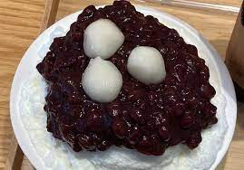

빙수(氷水, 문화어: 단얼음)는 잘게 부수어진 얼음에 당밀 또는 설탕과 그밖의 감미료를 섞은 얼음과자이다. 주재료인 얼음은, 과거에는 천연 얼음이 쓰였지만 나중에는 인조 얼음이 생산되고 양질의 감미료가 개발되면서, 현재는 삶은 팥을 넣은 팥빙수나 각종 과일을 섞은 과일빙수로 개량되어 여름철 청량 음식으로서 많은 사람이 즐기게 되었다. 얼음을 깎아 부수는 기계도 처음에는 대패 모양의 단순한 도구였으나, 이후 손으로 돌리는 수동 회전식을 거쳐 현재는 전동식이 널리 사용되고 있다.
가장 오래된 역사 기록은 기원전 400년 페르시아이다.[1] 서양에서는 기원전 300년경 마케도니아 왕국의 알렉산더 대왕이 페르시아 제국을 점령할 때 만들어 먹었다는 설도 있는데, 병사들이 더위와 피로에 지쳐 쓰러지자 높은 산에 쌓인 눈에 꿀과 과일즙 등을 넣어 먹었다고 한다. 또 로마의 정치가이자 장군인 카이사르는 알프스에서 가져온 얼음과 눈으로 술과 우유를 차게 해서 마셨다고 한다. 11세기 일본의 마쿠라노소시(枕草子)에는 얼음을 칼로 갈아 그 위에 칡즙을 뿌려서 먹었다는 기록이 나온다. 11세기 송나라 역사를 기록한 송사(宋史)에는 밀사빙(蜜沙氷)을 황제가 조정 대신에게 하사했다는 기록이 나온다. 밀사(蜜沙)는 꿀모래가 아니라 꿀에 버무린 팥소(豆沙)를 의미하고, 빙(氷)은 얼음을 의미한다.[2] 이탈리아의 마르코 폴로가 쓴 《동방견문록》에는 중국 베이징에서 즐겨 먹던 'frozen milk'의 제조법을 베네치아로 가져가 전했다는 기록이 있다. 빙수는 기원전 3000년경 중국에서 눈이나 얼음에 꿀과 과일즙을 섞어 먹은 것에서 비롯됐다.[3][출처 필요]